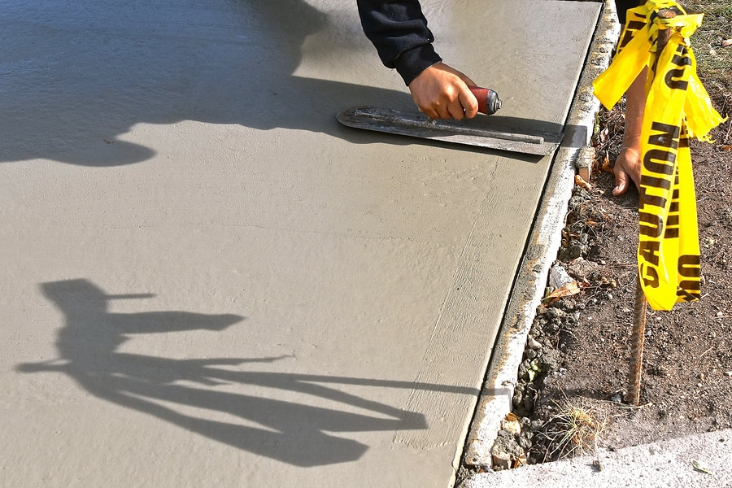

Define the pad or walk
We measure, check the property side of any public walk, and note doors, gates, and utilities. A small pad still needs a plan for water.
Home · Services · Concrete Installation
Concrete installation, on this site, means the flatwork that is not already covered by a driveway or a patio: sidewalks, garage aprons, shed and equipment pads, small approaches, and replacement panels. We form it, place it, and finish it for the load and the weather in the Mahoning Valley. We are not a structural builder of buildings or bridges.
When it is needed

A 4-inch sidewalk and a pad that will hold a loaded trailer are not the same slab. Thickness, base, and reinforcement follow the use. We ask what will sit on it before we order concrete.
Process
We measure, check the property side of any public walk, and note doors, gates, and utilities. A small pad still needs a plan for water.
Failed concrete is sawed or broken at a joint when only a panel is going. The base is compacted so the new section does not become the low spot.
Forms hold the line and the slope. Concrete is placed and finished to match the adjacent slab as closely as a new pour can. A patch will not be invisible.
Joints line up with the old work where they should. The new concrete stays protected from pets, salt, and loads until it can take them.
Cost factors
We do not publish a price per square foot. These are the items that move a quote once we see the lot.
A single sidewalk panel is a different mobilization than a long walk plus a pad. Small pours still need a crew and a truck.
Light foot traffic and a heavy pad are priced on different sections. We will not use a sidewalk thickness under a trailer.
Cutting a clean edge and doweling into sound concrete takes time, and it is what keeps the new panel from rocking against the old one.
Buckets, buggies, and a long carry from the street add labor. So does bagging debris out of a fenced yard.
Broom finish is standard for walks and pads. A decorative finish belongs on the stamped or stained pages and is priced as that work.
Questions
Often, yes, if the squares next to it are stable and we can cut a clean joint. If the whole walk has heaved, replacing one square leaves you with the same trip edge a few feet away. We will tell you how far the failure actually goes.
Yes. Tell us the shed size or the weight of what will sit there, and whether you need the pad larger than the building for a mower or a door swing. A thin, unreinforced cap on soft ground will crack under a shed that holds tools and a mower.
Yes, when the driveway beyond the apron is sound and at a workable height. The apron takes the impact of the street and the gutter. We tie the new apron into the drive and keep the slope so water is not trapped at the garage.
New concrete is lighter and will darken somewhat as it cures, but it rarely disappears into 20-year-old concrete. We can get the finish and the joint close. We will not promise an invisible patch.
We pour private walks, aprons, and the portion of a sidewalk that is the owner's to replace. The public walk in the right-of-way is often a city repair. We will point out where our work should stop so you are not paying to rebuild the city's concrete.
We buggy or wheel it from the street if the distance is reasonable. If the carry is long or the gate is too narrow, that labor is on the estimate. Some very small pads are placed from a mixer on site. We decide that after we see the access.
If this is a different slab than the one you need, start with Stamped concrete.
Tell us the town, what you want poured or replaced, and a phone number. The form includes a source field so we know the lead came from Concrete Youngstown. Do not send payment information.